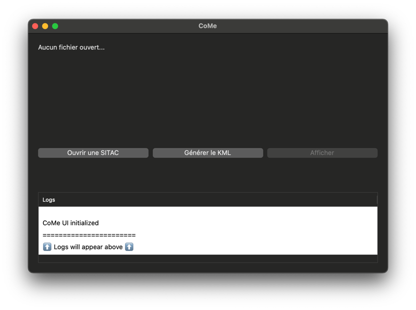
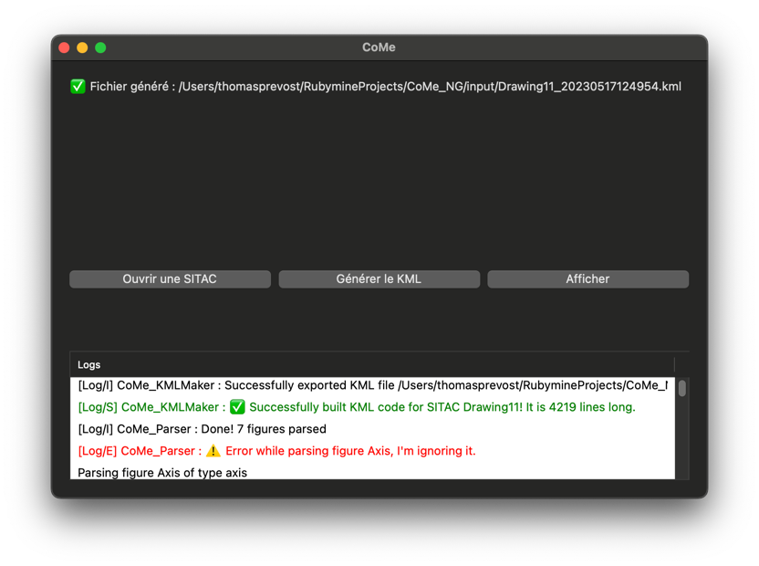

Projet Compilation S4 (CoMe_NG)
CoMe_Ng, le cousin éloigné de Melissa
Objectifs du projet
La création d’un compilateur, composé impérativement : - d’un lexer - d’un parser - d’un générateur d’AST - d’un pretty-printer permis par le pattern Visiteur
Portée du sujet
Le sujet, au-delà du projet de compilation en lui-même, est réalisé au profit des équipages CN-235 de l’Armée de l’Air et de l’Espace, et peut donc sembler plutôt spécifique. Nous allons donc le présenter ici.
Les attendus
Les équipages de transport, lors de vols tactique, ont besoin en amont de préparer leur “Situation Tactique” (SiTac). Cette dernière, réalisée sur des outils spécialisés (tels Melissa_NG), est alors généralement imprimée puis emportée dans le cockpit en version papier.
Néanmoins, dans le cadre de vols d’entraînement, pour lesquels les données sont Non Protégées car imaginées pour besoin d’exercice, il devient intéressant de pouvoir disposer d’une version numérique de cette SiTac, pouvant être affichée sur les iPads des équipages.
Les logiciels ne possédant pas nativement de capacités d’exportation au format kml, il était nécessaire de fournir un tel outil, permettant de générer un fichier kml à partir d’une SiTac exportée dans le format permis par le logiciel.
Une première version très succincte de ce projet, réalisée en VBA sur Microsoft Excel, a été réalisée par mes soins au sein de l’unité, et il semblait indispensable d’en proposer une version plus adaptée et facile d’utilisation.
Entrée
Un fichier exporté par un logiciel de cartographie spécialisée, au format XML, de forme dépendant du logiciel utilisé (NTK, Melissa_NG…).
Sortie
Un fichier kml contenant les objets de la SITAC, qu’il est possible d’afficher sur un outil de cartographie grand public (Google Earth, TacView…)
Le projet
Le projet, intitulé “CoMe_NG”, pour “Convertisseur Melissa de Nouvelle Génération”, écrit en Ruby, permet donc de réaliser cette conversion de manière simple et rapide.
Utilisation
On donne un fichier test.xml, dans le répertoire input, à des fins de test. D’autres fichiers, générés par ntk, pourront être ajoutés au fur et à mesure des essais menés en escadron.
-
Commencer par installer les dépendances
Rubydepuis le répertoire du projet :bundle install -
Puis lancer simplement l'interface graphique :
ruby lib/come_ui.rb
Une fois l’interface graphique lancée, elle ressemble à ceci :  Il suffit alors de choisir le fichier à ouvrir, puis de générer le kml. Le programme demandera l’emplacement souhaité pour le fichier à générer (le nom du fichier est généré automatiquement).
Une fois le fichier généré, on peut ouvrir le répertoire le contenant en cliquant sur le bouton correspondant.

Structure du projet
Le projet est composé des fichiers Ruby suivants : - come_andline.rb : le fichier principal permettant un fonctionnement en ligne de commande (obsolète) - come_ui.rb : le fichier principal permettant un fonctionnement en interface graphique - sitac_lexer.rb : le lexer, qui permet de “découper” le fichier XML en tokens - sitac_parser.rb : le parser, qui permet de “parser” les tokens et de générer l’AST - ast.rb permettant la génération de l’AST - sitac_objects.rb : le fichier contenant les classes génériques des objets de la SiTac - sem_ntk.rb : le fichier contenant la sémantique spécifique à la SiTac NTK - kml_maker.rb : conversion des objets créés en fichier KML - log_utils.rb implémentant un logger, permettant d’afficher des informations claires dans la console - token.rb implémentant la classe Token, permettant de représenter les tokens
Objets pris en charge
classDiagram
direction BT
class Bullseye {
vradius
name
center
ring_distance
hradius
rings
}
class Circle
class Corridor {
name
width
end_point
start_point
}
class Ellipse {
vradius
name
center
hradius
}
class Figure
class Line {
name
points
}
class Point {
name
longitude
latitude
}
class Polygon
class Rectangle {
name
start
horizontal
vertical
}
class SITACObjects
Figure --> Bullseye
Ellipse --> Circle
Figure --> Corridor
Figure --> Ellipse
SITACObjects ..> Figure
Figure --> Line
Figure --> Point
Line --> Polygon
Figure --> Rectangle